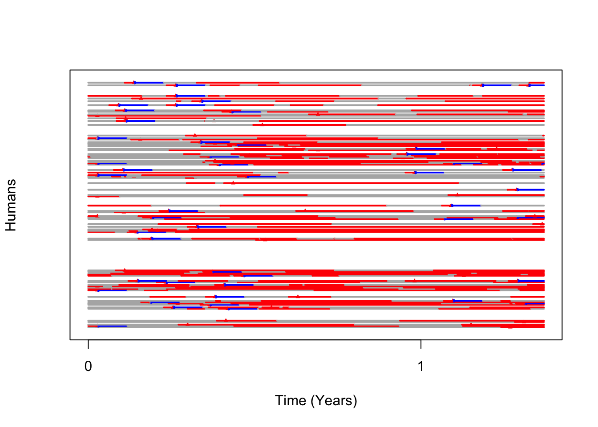

In this simulation run we will use the PfSI enhanced SIS module of Plasmodium falciparum transmission. Additionally because mosquitoes are not simulated individually in MACRO (they are simulated by integer-valued difference equations), we need the SimBitePfSI module to queue infectious bites on human hosts. We also need to initialize the Aquatic Ecology module we wish to use, in this case we choose Emerge. To fully initialize all interacting classes we need to run the following code:
# attach the MASH package
library(MASH)## MASH (Modular Analysis and Simulation for Human Health): version 0.1# initialize classes for MACRO
MACRO.Humans.Setup()## initializing MACRO component methods & fields for Human & HumanPop Class# setup class methods for PfSI and SimBite modules
# MACRO relies on SimBitePfSI module for adding bites to humans
PfSI.Setup()## initializing PfSI PATHOGEN module## initializing PfSI SimBite module# MACRO Patch initialization
MACRO.Patch.Emerge.Setup() # 'Emerge' model## initializing MACRO 'Emerge' Module Methods for 'MacroPatch' ClassNow that all classes have had the necessary methods, fields, and pointers added to their R6Class Class generator objects, we need to instantiate the specific objects for our simulation run. We can do that as follows on a simple metapopulation tile of 10 patches.
# 10 patches in the tile
nPatch = 10
tileParameters = MACRO.Tile.Parameters(N = nPatch,aquaModel = "emerge",aquaPars = list(N=nPatch,lambda=rep(50,nPatch)))
tileParameters$MacroMosquitoPop_PAR$M_density = rep(200,nPatch)
tile = MacroTile$new(MacroTile_PAR = tileParameters)We are finally ready to run the main simulation. There is only one last step and that is to initialize the human infection for PfSI module. We will run for 500 days.
tile$init_PfSI(PfPR = rep(0.15,nPatch))## [1] "init PfSI infections in patch: 1 at PfPR: 0.15"
## [1] "init PfSI infections in patch: 2 at PfPR: 0.15"
## [1] "init PfSI infections in patch: 3 at PfPR: 0.15"
## [1] "init PfSI infections in patch: 4 at PfPR: 0.15"
## [1] "init PfSI infections in patch: 5 at PfPR: 0.15"
## [1] "init PfSI infections in patch: 6 at PfPR: 0.15"
## [1] "init PfSI infections in patch: 7 at PfPR: 0.15"
## [1] "init PfSI infections in patch: 8 at PfPR: 0.15"
## [1] "init PfSI infections in patch: 9 at PfPR: 0.15"
## [1] "init PfSI infections in patch: 10 at PfPR: 0.15"tile$simMacro(5e2)pfsiHist = tile$get_HumanPop()$get_History()
plot_PfSI(pfsiHist)
travelHist = tile$get_HumanPop()$get_travelHistory()
# tile$get_HumanPop()$json_travelHistory(con = file(description = "/Users/slwu89/Desktop/OUTPUT/humanTravel.json",open = "wt"))